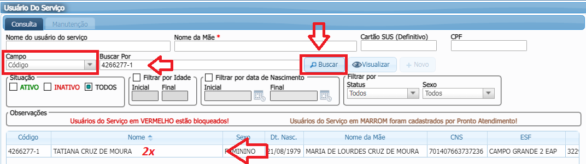
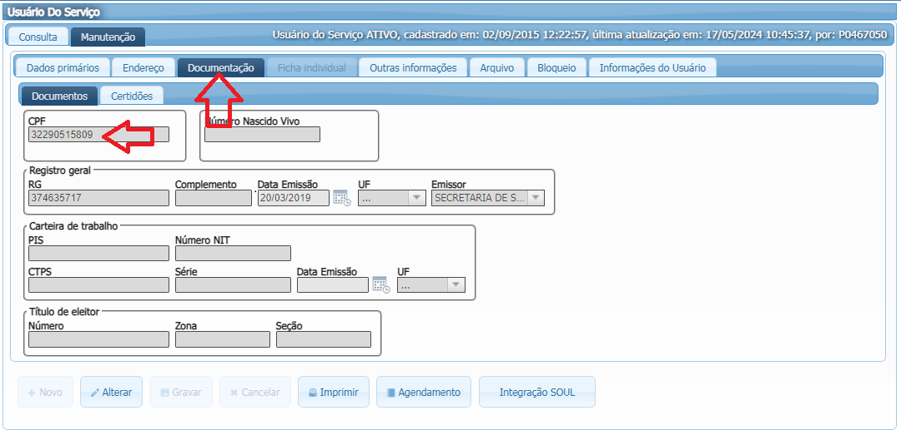
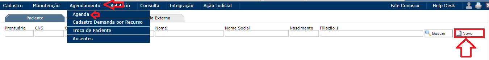
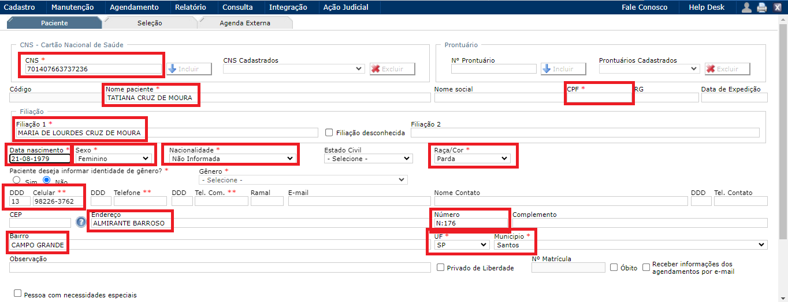

Criação do Cadastro:
Passo 1:

⚀ Identifique no MV o CPF do paciente.
Passo 2:

⚀ Copie o CPF clicando duas vezes em cima, com botão direito do mouse e clique em copiar.
Passo 3:

⚀ Após logar no CROSS/SIRESP, vá em agendamento, clique em agenda e depois em Novo.
Passo 4:

⚀ Feito isso, preencha todos os dados com (*) conforme a imagem ilustrativa.